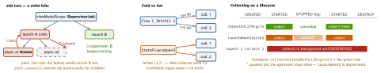

android · folio
In one line: A coroutine is a suspendable computation launched in a scope
whose Job tree gives structured concurrency (a parent waits for and
cancels its children); cancellation is cooperative. Flow is a
cold stream, StateFlow/SharedFlow are hot — the Kotlin
twins of async/await, Task, AsyncSequence and Combine
subjects.
Download PDF Print view LaTeX source


Coroutines — the mechanism
suspend funcompiles to a state machine + a hiddenContinuationparam; suspending frees the thread (likeawait).launch→Job(fire-and-forget) ·async→Deferred<T>,await();coroutineScope{}waits for all children, rethrows the first failure;supervisorScope{}isolates them.- Scopes:
viewModelScope(onCleared),lifecycleScope(onDestroy),rememberCoroutineScope(leaves composition).GlobalScope= unstructured, leaks. - Dispatchers:
Main(UI;Main.immediateskips the re-post if already there) ·IO(blocking, 64 threads or #cores if more) ·Default(CPU, #cores).withContext(IO) {}hops and returns. - Cancellation is cooperative:
CancellationExceptionat the next suspension point; CPU loops callensureActive()/yield(). Blocking I/O is not interrupted. - Errors:
launchpropagates up the Job tree to aCoroutineExceptionHandleron the root (ignored on children);asyncrethrows atawait().
Flow
- Cold
flow{}: producer re-runs per collector; Room/Retrofit streams.flowOn(IO)moves upstream only;.catchsees upstream errors only. - StateFlow: always a value, conflated, replays latest — screen state. SharedFlow:
replay/buffer configurable — broadcasts. stateIn(scope, WhileSubscribed(5_000), init): upstream survives the rotation gap, stops 5 s after the last collector.Eagerly/Lazilynever stop.flatMapLatestcancels the previous inner flow (search);combine= latest of each (state),zippairs by index.
Example — VM + safe collection
val ui: StateFlow<Ui> = repo.devices() // cold (Room)
.map { Ui.Loaded(it) }
.catch { emit(Ui.Error(it)) } // upstream only
.stateIn(viewModelScope, WhileSubscribed(5_000), Ui.Loading)
private val _ev = Channel<Event>(Channel.BUFFERED)
val events = _ev.receiveAsFlow() // one-shot
fun refresh() = viewModelScope.launch {
try { withContext(Dispatchers.IO) { repo.sync() } }
catch (e: IOException) { _ev.send(Event.Offline) }
} // never catch(Exception)
// Activity / Fragment (viewLifecycleOwner):
lifecycleScope.launch { repeatOnLifecycle(STARTED) {
vm.ui.collect { render(it) } } }Coroutines ↔ Swift concurrency
| Kotlin | Swift |
|---|---|
suspend fun | async func |
launch {} in a scope | Task {} (but unstructured) |
async/await, coroutineScope | async let, TaskGroup |
Job.cancel() · ensureActive() | task.cancel() ·
Task.checkCancellation() |
CancellationException | CancellationError |
Dispatchers.Main (runtime) | @MainActor (compile-time checked) |
withContext(IO) | a nonisolated async func / Task.detached |
Mutex · confined state | actor |
Flow (cold) · callbackFlow | AsyncSequence ·
AsyncStream(continuation) |
StateFlow · SharedFlow | CurrentValueSubject/@Published ·
PassthroughSubject |
flatMapLatest · combine | switchToLatest · combineLatest |
viewModelScope | Task cancelled in deinit |
repeatOnLifecycle | .task { for await … } |
Android vs iOS — platform
| Android | iOS | |
|---|---|---|
| Entry | Activity, Service, Receiver, Provider; Intents route between apps | App + UIScenes; URL schemes |
| Links | App Links (assetlinks.json) | Universal Links (AASA) |
| Permiss. | runtime (API 23+); 2 denials = auto-deny; notifications from API 33 | Info.plist string; one prompt, then Settings |
| Backgr. | WorkManager (persisted, constraints, periodic ≥ 15 min); fg service + notification; Doze | BGTaskScheduler (OS-timed), bg URLSession |
| Push | FCM; data vs notification; channels (26+) | APNs; alert vs
content-available |
| Devices | OEM skins, minSdk/targetSdk spread | few models, fast updates |
| Build | Gradle: build types × flavors, R8 | Xcode configs, SPM |
| DI · DB | Hilt (Dagger, compile-time) · Room (checked SQL, Flow) | init injection · Core Data / SwiftData |
Traps
catch (e: Exception)swallowsCancellationException— rethrow it or catch specific types.StateFlowfor one-shot events re-fires after rotation; aSharedFlow(replay=0)drops events with no collector →Channel.- Swift
Task{}is not a child: nobody cancels it — store and cancel.
Remember
Scope owns Job owns children · cancel = cooperative · cold per collector, hot shared · collect from STARTED.